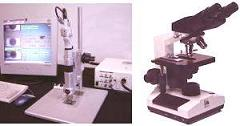

|
Optical
Microscopy
Optical
microscopy,
or light microscopy, refers to the inspection of the sample at higher
magnification using an instrument known as an
optical
or
light
microscope. During
optical or light microscope inspection, the specimen is positioned perpendicularly to the
axis of the objective lens. Light is then shown on the sample, which
reflects some light back to the lens.
The image seen in the microscope depends not only on how the
specimen is illuminated and positioned, but on the characteristics of
the specimen as well.
|
 |
|
Fig. 1.
A high-end microscope with an image capture system
(left) and an
ordinary optical microscope (right)
|
A basic light
microscope has the following parts: 1) a
lamp
to illuminate the specimen; 2) a
nose piece
to hold 4-5
objectives used in changing the viewing magnification; 3) an
aperture
diaphragm
to adjust the
resolution and contrast; 4) a
field
diaphragm
to adjust the field of view; 5) an
eye piece
to magnify
the objective image (usually by 10X); and 6) a
stage
for manipulating the specimen.
Optical microscopes are
commonly classified as either low-power or high-power microscopes.
Low-power microscopes are those which typically magnify the specimen at
5X to 60X, although some can magnify up to 100X. High-power
microscopes, on the other hand, typically magnify the specimen at 100X
to 1000X.
There
are three modes by which optical microscopy is commonly conducted,
namely, brightfield illumination, darkfield illumination, and interference contrast (Nomarski).
Brightfield
illumination is the normal mode of viewing with an optical microscope.
This mode provides the most
uniform
illumination of the sample.
Under this mode, a
full
cone of light is focused by the objective
on the sample.
The image observed results from the various levels of
reflectivities exhibited by the compositional and topographical
differences on the surface of the sample.
Under
darkfield
illumination,
the inner circle area of the light cone is
blocked,
such that the sample is only illuminated by light that impinges on its
surface at a glancing
angle.
This scattered reflected light usually comes from feature edges,
particulates, and other
irregularities
on the sample surface. Darkfield illumination is therefore effective in
detecting surface scratches and contamination.
Interference
contrast
(Nomarski)
makes use of
polarized
light that is divided by a Wollaston prism into two orthogonal light
packets. These slightly
displaced
light packets hit the specimen at two different points and return to the
prism through different paths. The differences in the routes of the
reflected packets will produce
interference
contrasts
in the image when the packets are recombined by the prism upon their
return. Surface defects or features such as etch pits and cracks
that are difficult to see under brightfield illumination can stand out
clearly under Nomarski mode.
When
performing optical microscopy, the following must be observed:
1)
The specimen must be positioned perpendicular to the axis of the
objective. Otherwise, some regions of the specimen within the viewing
area will be out of focus.
2)
The mode of operation must be chosen well to meet the desired results.
If needed, more than one mode of operation may be employed to
characterize the area of interest.
See Also:
Failure
Analysis; All
FA Techniques;
SEM/TEM;
Microthermography;
Microprobing; FA Lab
Equipment; Basic FA
Flows;
Package Failures; Die
Failures
HOME
Copyright
© 2001-2005
www.EESemi.com.
All Rights Reserved.
|